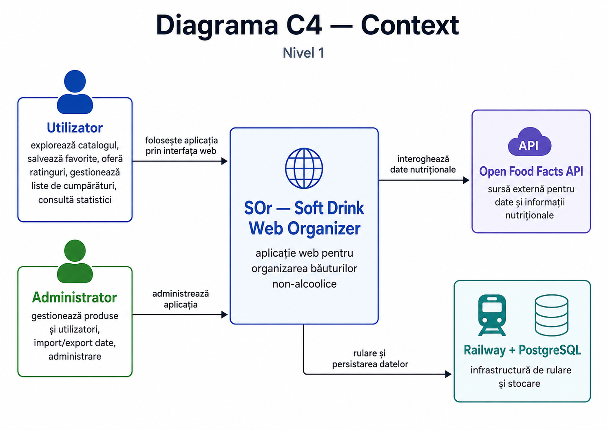
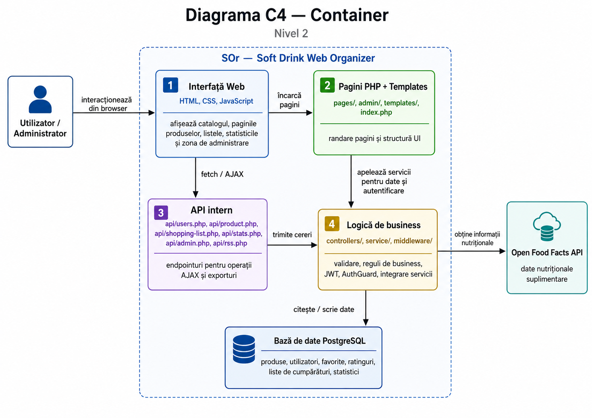
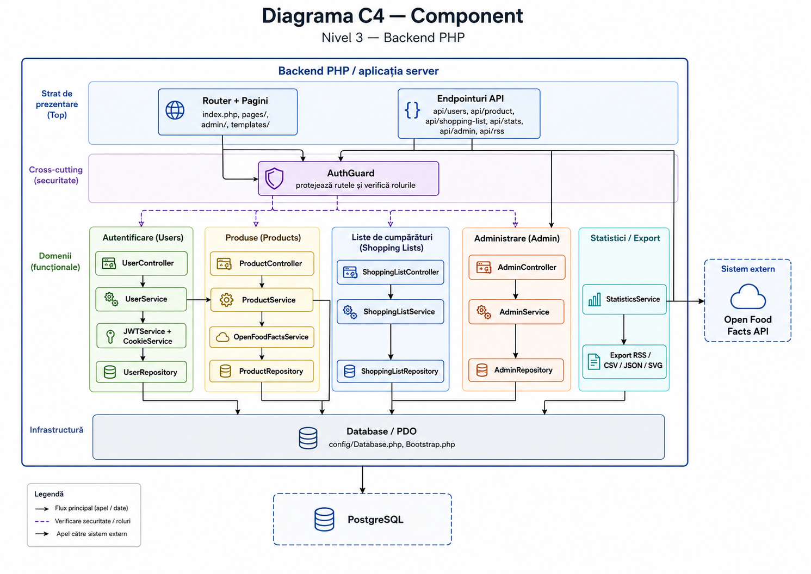

Raport Scholarly HTML
IEEE SRS-inspired
SOr — Soft Drink Web Organizer
Specificația cerințelor, designul interfeței, arhitectura, modelarea datelor și progresul dezvoltării pentru aplicația Web de organizare a băuturilor non-alcoolice.
Rezumat
SOr este o aplicație Web full-stack, implementată fără framework-uri, pentru gestionarea informațiilor și preferințelor despre băuturi non-alcoolice. Sistemul oferă catalog de produse, pagini detaliate, autentificare, favorite, ratinguri, liste de cumpărături private sau partajate, statistici, exporturi, feed RSS și administrare de produse/utilizatori. Backend-ul este scris în PHP și comunică prin PDO cu PostgreSQL, iar interfața folosește HTML, CSS și JavaScript vanilla.
1. Introducere
1.1 Scop
Documentul descrie cerințele principale, structura aplicației, deciziile de design, arhitectura, modelul de date, sursele de date și etapele de dezvoltare pentru proiectul SOr. Structura raportului urmărește ideea unei specificații de cerințe de sistem: introducere, descriere generală, cerințe specifice, design, arhitectură, model de date și validare.
1.2 Domeniul aplicației
Aplicația este orientată către utilizatori care vor să descopere, salveze, evalueze și organizeze băuturi non-alcoolice. Domeniul include ceaiuri, sucuri, lactate, siropuri, ape și băuturi sezoniere. Sistemul păstrează informații despre ingrediente, alergeni, valori nutriționale, prețuri, disponibilitate pe regiuni/sezoane și localuri unde produsul poate fi găsit.
1.3 Public țintă
- utilizatori obișnuiți care caută băuturi și își fac liste de cumpărături;
- administratori care gestionează catalogul și utilizatorii;
- evaluatori/profesori care verifică funcționalitățile, arhitectura și respectarea cerințelor Web.
1.4 Definiții
| Termen | Descriere |
|---|---|
| JWT | Token semnat folosit pentru autentificare și păstrarea rolului utilizatorului. |
| RSS | Format XML prin care se publică un feed cu produse populare. |
| Shared view | Vizualizare publică a unei liste de cumpărături prin token unic. |
| Open Food Facts | API public folosit pentru importul unor informații despre produse. |
2. Descriere generală
2.1 Perspectiva produsului
SOr este o aplicație Web independentă, rulată local cu serverul PHP built-in sau în producție prin Docker/Railway. Aplicația are interfață server-rendered prin pagini PHP, dar majoritatea acțiunilor dinamice sunt realizate prin JavaScript și endpointuri API care întorc JSON, CSV, SVG sau RSS.
2.2 Clase de utilizatori
| Utilizator | Permisiuni | Exemple de acțiuni |
|---|---|---|
| Vizitator | Acces limitat | vede landing page, accesează autentificarea, poate consulta RSS-ul public. |
| Utilizator autentificat | Acces la funcționalitățile principale | explorează produse, adaugă favorite, evaluează produse, creează liste. |
| Administrator | Acces complet la zona de administrare | gestionează produse, utilizatori, import/export și statistici admin. |
2.3 Constrângeri
- nu se folosesc framework-uri backend sau frontend;
- interfața trebuie să fie responsive și să respecte HTML/CSS actual;
- operațiile cu baza de date trebuie să folosească prepared statements;
- răspunsurile dinamice se consumă prin AJAX/fetch, fără refresh complet pentru operațiile importante;
- datele trebuie să poată fi exportate în formate cerute: CSV, JSON, SVG și RSS.
3. Cerințe funcționale și nonfuncționale
3.1 Cerințe funcționale
| ID | Cerință | Prioritate | Status |
|---|---|---|---|
| FR-01 | Sistemul permite înregistrarea, autentificarea și ieșirea din cont. | Ridicată | Implementat |
| FR-02 | Sistemul protejează paginile private și zona de admin pe baza rolului. | Ridicată | Implementat |
| FR-03 | Utilizatorul poate explora catalogul de produse și poate folosi filtre. | Ridicată | Implementat |
| FR-04 | Utilizatorul poate vedea detaliile unui produs. | Ridicată | Implementat |
| FR-05 | Utilizatorul poate adăuga/elimina produse favorite. | Medie | Implementat |
| FR-06 | Utilizatorul poate acorda rating și review. | Medie | Implementat |
| FR-07 | Utilizatorul poate crea și gestiona liste de cumpărături. | Ridicată | Implementat |
| FR-08 | Listele pot fi partajate prin token și sincronizate periodic. | Medie | Implementat |
| FR-09 | Sistemul oferă statistici și exporturi CSV/JSON/SVG. | Ridicată | Implementat |
| FR-10 | Sistemul oferă feed RSS pentru produse populare. | Medie | Implementat |
| FR-11 | Administratorul poate gestiona produse și utilizatori. | Ridicată | Implementat |
| FR-12 | Mod de cumpărături interactiv, cu afișarea produselor sub formă de carduri și suport pentru swipe pe mobil. | Bonus | Implementat |
| FR-13 | Administratorul poate importa informații din Open Food Facts. | Bonus | Implementat |
3.2 Cerințe nonfuncționale
| ID | Cerință | Implementare |
|---|---|---|
| NFR-01 | Securitate | JWT semnat, cookie HttpOnly/SameSite, prepared statements, password hashing, escaping la output. |
| NFR-02 | Usability | navigare clară, carduri, badge-uri, feedback prin mesaje/toast, shop mode. |
| NFR-03 | Responsive design | CSS adaptat pentru desktop și mobile, inclusiv shared view și swipe pe mobil. |
| NFR-04 | Mentenabilitate | separare pe controllers, services, repositories, models și templates. |
| NFR-05 | Portabilitate | rulează local cu PHP built-in și în deployment cu Docker/Railway. |
| NFR-06 | Validare | Stylelint pentru CSS, HTML semantic și testare manuală a fluxurilor principale. |
4. Interacțiunea cu utilizatorul
4.1 Flux principal utilizator
- Utilizatorul intră pe landing page și alege autentificare sau cont nou.
- După autentificare, ajunge pe pagina Home, unde poate căuta produse sau naviga spre catalog.
- În catalog, aplică filtre sau caută după text.
- Deschide pagina unui produs, unde poate vedea detalii, ratinguri și opțiunea de favorite.
- Adaugă produsul într-o listă de cumpărături sau creează o listă nouă.
- În pagina listelor, poate bifa produse, edita cantități, seta buget, partaja lista sau intra în shop mode.
4.2 Flux administrator
- Administratorul se autentifică și accesează pagina Admin.
- Poate vedea dashboardul cu statistici generale.
- În pagina Produse, poate crea, edita, șterge, importa sau exporta produse.
- În pagina Utilizatori, poate lista utilizatori, schimba roluri și șterge conturi.
5. Designul interfeței
Interfața folosește un design întunecat, cu accent verde pentru acțiuni pozitive/principale și accent roz pentru elemente care trebuie evidențiate, precum alergeni, badge-uri importante sau valori din grafice. Alegerea este potrivită pentru o aplicație de catalog deoarece imaginile produselor, cardurile și badge-urile ies mai clar în evidență pe fundal închis.
5.1 Paletă cromatică
| Rol | Valoare | Motivație |
|---|---|---|
| Background principal | #171817 | reduce oboseala vizuală și oferă contrast. |
| Carduri | #252824 | separă clar informațiile fără contrast agresiv. |
| Accent verde | #8df0c0 | sugerează prospețime, potrivit pentru băuturi și produse alimentare. |
| Accent roz | #f72585 | creează contrast pentru badge-uri și informații importante. |
| Text principal | #f4f1ea | lizibilitate ridicată pe fundal închis. |
5.2 Tipografie
Fontul Nunito este folosit pentru text curent, label-uri și butoane, deoarece are forme rotunjite și prietenoase. Playfair Display este folosit pentru titluri și brand, pentru a oferi identitate vizuală aplicației.
5.3 Componente reutilizabile
menține accesul rapid la Home, Catalog, Liste, Statistici și Admin.
grupează produse, statistici și acțiuni într-un format scanabil.
marchează categorii, alergeni, statusuri și valori importante.
diferențiază acțiunile primare de cele secundare.
5.4 Responsivitate
Layoutul este gândit pentru desktop și mobil. Pe mobile, listele partajate au interacțiuni adaptate, inclusiv swipe pentru bifarea produselor. Cardurile și tabelele folosesc layouturi flexibile sau scroll orizontal unde este necesar.
Arhitectură și diagrame C4



7. Modelarea și proveniența datelor
7.1 Tabele principale
| Tabel | Rol |
|---|---|
users | conturi, roluri, parole hashuite, avatar. |
products | produse, preț, imagine, ingrediente, brand, volum, valori nutriționale, view count. |
categories, allergens, seasons, regions, venues | date de clasificare și disponibilitate. |
shopping_lists, shopping_list_items | liste de cumpărături, buget, mood, share token și produse adăugate. |
user_favorites | relație many-to-many între utilizatori și produse favorite. |
product_ratings | rating și review pentru produse, cu unicitate pe utilizator-produs. |
product_views | istoric de vizualizări pentru produse. |
schema_migrations | urmărirea migrațiilor aplicate. |
7.2 Relații importante
productsare relații many-to-many cucategories,allergens,seasons,regionsșivenues.usersare relație one-to-many cushopping_lists.shopping_listsare relație one-to-many cushopping_list_items.product_ratingsimpune rating unic pentru perechea utilizator-produs.share_tokenpermite acces public controlat la o listă partajată.
7.3 Proveniența datelor
| Sursă | Date furnizate | Utilizare |
|---|---|---|
db/seeds/seed.sql | 20 produse, utilizatori, categorii, alergeni, sezoane, regiuni, localuri. | date inițiale pentru demo și testare. |
| Interacțiuni utilizator | favorite, ratinguri, view count, liste. | statistici, clasamente, personalizare. |
| Admin panel | produse create/editate manual, import CSV. | administrarea catalogului. |
| Open Food Facts | nume, brand, ingrediente, cantitate, valori nutriționale. | import asistat pentru produse. |
8. API și formate de răspuns
Endpointurile API sunt fișiere PHP din directorul api/. Rutarea se face prin parametrul action, folosind match($action) pentru separarea acțiunilor.
8.1 Endpointuri principale
| Fișier | Acțiuni reprezentative | Format |
|---|---|---|
api/users.php | register, login, logout, me | JSON |
api/product.php | list, get, top, search, toggle_favorite, rate, get_ratings, increment_view, off_search | JSON |
api/shopping-list.php | my_lists, create, share, shared_view, shared_mark, add_item, mark_purchased | JSON |
api/stats.php | top_products, most_favorited, category_distribution, avg_rating, products_over_time, export_csv, export_json, export_svg | JSON/CSV/SVG |
api/rss.php | feed produse populare | RSS XML |
api/admin.php | stats, form_data, list_products, create_product, import_csv, list_users, update_role | JSON/CSV/JSON download |
8.2 Motivația formatelor
- JSON este folosit pentru comunicarea dintre frontend și backend.
- CSV este folosit pentru export tabelar ușor de deschis în Excel/Sheets.
- SVG este folosit pentru grafice portabile, randabile direct în browser.
- RSS permite citirea automată a clasamentului de către aplicații externe sau feed readers.
9. Securitate
9.1 Autentificare JWT
Autentificarea a fost refactorizată de la sesiuni PHP spre JWT implementat manual. JWTService creează și verifică tokenuri HS256, folosind HMAC-SHA256 și Base64URL. Payload-ul conține user_id, role, iat și exp.
9.2 Cookie securizat
CookieService salvează tokenul într-un cookie HttpOnly, cu SameSite=Lax și secure=true pentru HTTPS. HttpOnly reduce riscul ca JavaScript malițios să citească tokenul, iar SameSite=Lax reduce riscul unor atacuri CSRF obișnuite.
9.3 Autorizare
AuthGuard expune metodele requireAuth(), requireAdmin() și requireGuest(). Pentru admin, rolul este citit din JWT prin UserService::getCurrentRole(), fără query suplimentar către baza de date.
9.4 Protecții suplimentare
- Parolele sunt hash-uite cu
password_hash. - SQL injection este limitat prin PDO prepared statements.
- XSS este limitat prin
htmlspecialcharsla output. - Valorile sunt validate în servicii și controllere.
Observație: în arhiva analizată mai există apeluri session_start() în mai multe fișiere istorice, inclusiv pagini, admin și câteva endpointuri API. Autentificarea este bazată pe JWT, dar pentru coerență cu afirmația „sesiunile au fost eliminate complet”, aceste apeluri ar trebui șterse înainte de predare.
10. Etape intermediare ale dezvoltării
| Etapă | Conținut | Rezultat |
|---|---|---|
| Fundație | structură proiect, migrații, modele, repositories, env config. | bază tehnică pentru aplicație. |
| Autentificare și home | login/register, pagină home, navigație. | flux inițial utilizator. |
| Catalog | API produse, filtre, favorite persistente, ratinguri. | catalog dinamic prin AJAX. |
| Templates și produs | header/navbar/footer reutilizabile, pagină detaliată produs. | UI coerent și reutilizabil. |
| Shopping list | liste, itemi, mood, buget, shop mode, partajare. | funcționalitate completă de organizare cumpărături. |
| Shared view | polling la 3 secunde, badge Live, swipe mobile. | sincronizare periodică pentru liste partajate. |
| Statistici | service statistici, endpointuri, grafice, exporturi. | JSON/CSV/SVG pentru date agregate. |
| RSS | feed cu produse populare. | interoperabilitate cu feed readers. |
| Admin panel | dashboard, CRUD produse, user management, import/export. | administrare completă a aplicației. |
| JWT și modularizare | JWTService, CookieService, AdminService, AdminController, ShoppingListService. | separare mai bună și autentificare fără dependență de sesiuni pentru roluri. |
| Open Food Facts | căutare după nume/cod de bare și mapare spre produs intern. | funcționalitate bonus de import date. |
| Deploy și validare | Dockerfile, Railway, Stylelint. | proiect hostabil și CSS verificabil. |
11. Testare și validare
11.1 Testare manuală recomandată
- înregistrare cont nou și login/logout;
- login cu admin și acces la paginile admin;
- catalog: filtre, căutare, paginare;
- pagină produs: favorite, rating, recenzii, incrementare vizualizări;
- liste: creare, redenumire, adăugare produse, bifare, ștergere, buget, mood;
- shared view: acces prin token, polling, bifare produs;
- statistici: JSON, CSV, SVG, RSS;
- admin: CRUD produs, import CSV, export, schimbare rol utilizator;
- Open Food Facts: căutare după nume/cod de bare și preluare date.
11.2 Validare CSS
npm install
npm run lint:css
npm run lint:css:fix11.3 Validare HTML
Paginile principale pot fi verificate cu validatorul W3C. Pentru testare completă, se recomandă validarea paginilor randate în browser, nu doar fișierele PHP sursă.
12. Deployment
Proiectul este pregătit pentru Railway prin Dockerfile și railway.json. Dockerfile instalează extensiile necesare pentru PostgreSQL, copiază aplicația în container, rulează migrațiile și pornește serverul PHP pe portul furnizat prin variabila PORT.
CMD php /var/www/html/db/migrate.php migrate; php -S 0.0.0.0:${PORT:-8080} -t /var/www/html
Baza de date folosește variabilele PostgreSQL expuse de Railway: PGHOST, PGPORT, PGDATABASE, PGUSER, PGPASSWORD.
Bibliografie
- Schema.org, ScholarlyArticle, https://schema.org/ScholarlyArticle.
- Vivliostyle sample, Scholarly HTML — Markedly Smart, https://vivliostyle.github.io/vivliostyle_doc/samples/scholarly/index.html.
- IEEE SRS template example, Software Requirements Specification Template, https://web.cs.dal.ca/~hawkey/3130/srs_template-ieee.doc.
- Open Food Facts, Public food products database/API, https://world.openfoodfacts.org/.
- Railway, Deployment platform, https://railway.app/.